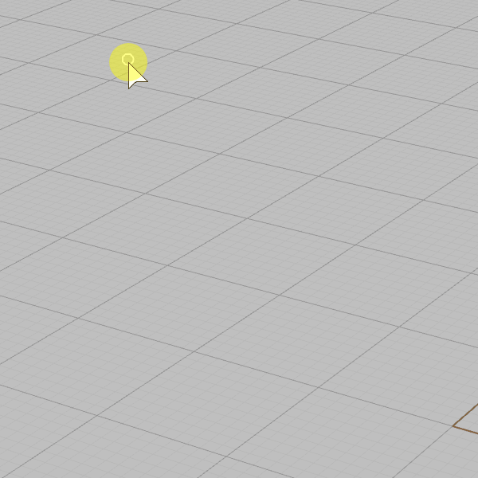

CrayonToggleInstantBake
Toggles instant bake mode. Instant bake immediately creates Geometry from brush strokes

 Toggles instant bake mode. Instant bake immediately creates Geometry from brush strokes Toggles instant bake mode. Instant bake immediately creates Geometry from brush strokes
Toggles instant bake mode. Instant bake immediately creates Geometry from brush strokes Toggles instant bake mode. Instant bake immediately creates Geometry from brush strokes